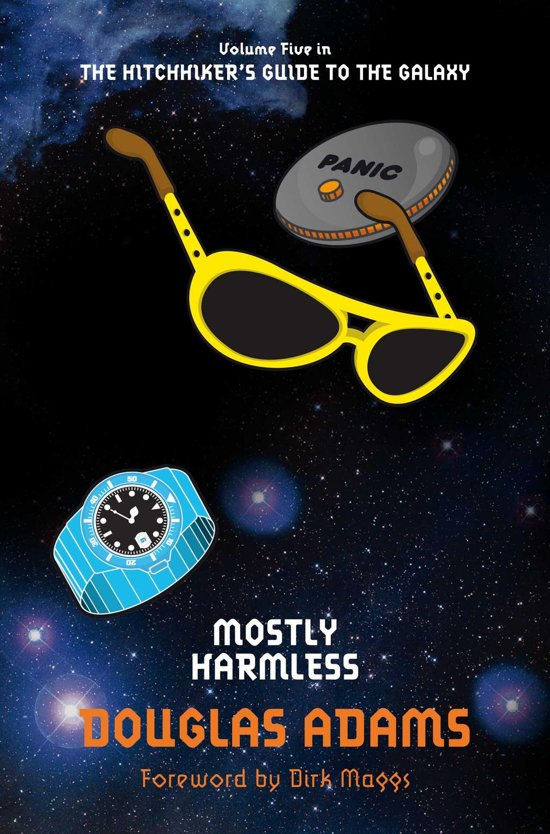

Mostly Harmless (Book 5)
Synopsis
Arthur Dent hadn't had a day as bad as this since the Earth had been blown up. After years of galactic wanderings, Arthur finally settles on the small planet Lamuella and becomes a sandwich maker. Looking forward to a quiet life, his plans are thrown awry by the unexpected arrival of his daughter. There's nothing worse than a frustrated teenager with a copy of the Hitchhiker's Guide to the Galaxy in their hands. When she runs away, Arthur goes after her determined to save her from the horrors of the universe. After all - he's encountered most of them before . . .
Download PDF